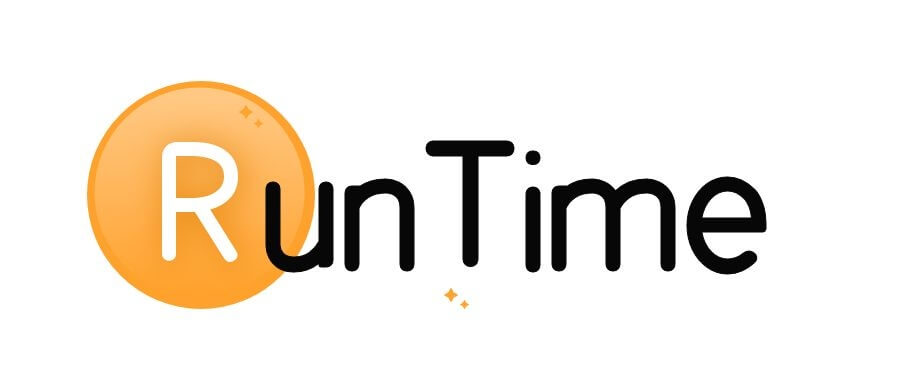

如果你做过 iOS 开发那你肯定知道 Runtime，作为 Objective-C 语言的基石，Runtime 渗透到 iOS 开发的方方面面。从函数调用到内存管理，再到对象构建都离不开 Runtime 的身影。
这篇文章将从整体视角概括一下 Runtime 的几个话题：
- Runtime 是什么，有什么作用？
- Runtime 是怎么使用的？
- 我们能用 Runtime 做什么？

到公众号【iOS开发栈】学习更多SwiftUI、iOS开发相关内容。
Runtime
从工程学的本质上讲 Runtime 就是一个用 C/C++ 写的项目。这个项目被用来实现 Objective-C 这门语言，如果你想的话，它也可以用来实现其他语言（Objective-D ?)。
编程语言可以分成机器语言（二进制、汇编）和高级语言（C、Java等），这样划分的标准是是否能够直接被机器识别。高级语言之所以高级是因为能够直接被人类读懂，而为了做到这一点就要做出时间、空间上的牺牲。比方说在高级语言中声明一个类的语言大概是class A {}，这样一段字母人能看懂，机器却不懂，所以就要通过一系列转化把它变成机器能懂的东西 —— 一段内存空间。
在高级语言中又可以分两个层级 —— 系统编程语言（system programming language）和非系统编程语言。系统编程语言是指那些需要通过直接调用操作系统 API 来实现功能的语言，比如 C、C++、Swift、Rust等。这类语言由于需要直接跟操作系统打交道所以要根据操作系统的不同执行不同的调用，而且这类语言因为离硬件“更近”所以是更加“危险的”，一不小心就可能导致系统崩溃。
系统编程语言一般可以自己实现自己，而非系统编程语言一般需要通过系统编程语言来实现语法。OC 就是通过 C/C++ 来实现的，用来实现 OC 的代码就在 Runtime 库里面。可以从苹果的开源网站上获取到 Runtime 的源代码 objc4，GNU 也有一份另外的开源实现。打开 objc4 的代码可以看到里面最主要的文件夹就是 runtime。
这里可能有一个误区，Runtime 并不能和 OC 的动态特性划等号（Runtime != OC 动态特性），也就是说如果 objc4 的作者想的话，他完全可以把 Objc 实现成一个完全没有动态能力的语言。而 OC 之所以拥有目前的这些动态特性，是由于 Runtime 中用到的一些数据结构提供了动态的能力（也可以不提供）。
日常用到的 Runtime
在日常开发中我们一直都在使用 Runtime 的功能，比如：
// 根据 instance 对象或者类名获得一个 class 对象
- (Class)class
+ (Class)class
// 判断当前 instance/class 对象的 isa 指向是不是 class/meta-class 对象或者它的子类类型
- (BOOL)isKindOfClass:(Class)cls
+ (BOOL)isKindOfClass:(Class)cls
// 判断当前 instance/class 对象的 isa 指向是不是 class/meta-class 对象类型
- (BOOL)isMemberOfClass:(Class)cls
+ (BOOL)isMemberOfClass:(Class)cls
// 判断对象是否可以接收特定消息
- (BOOL)respondsToSelector:(SEL)sel
+ (BOOL)respondsToSelector:(SEL)sel
// 判断对象是否实现了特定协议中定义的方法
- (BOOL)conformsToProtocol:(Protocol *)protocol
+ (BOOL)conformsToProtocol:(Protocol *)protocol
// 可以根据一个 SEL，得到该方法的 IMP
- (IMP)methodForSelector:(SEL)sel
+ (IMP)methodForSelector:(SEL)sel
除了通过 OC 的方法，还可以直接调用 Runtime 库中的 C 函数，比如：
/****** 关联对象相关 ********/
// 添加关联对象
void objc_setAssociatedObject(id object, const void * key, id value, objc_AssociationPolicy policy)
// 获得关联对象
id objc_getAssociatedObject(id object, const void * key)
// 移除指定 object 的所有关联对象
void objc_removeAssociatedObjects(id object)
/***** 属性相关 *********/
// 获取一个属性
objc_property_t class_getProperty(Class cls, const char *name)
// 拷贝属性列表（最后需要调用 free 释放）
objc_property_t *class_copyPropertyList(Class cls, unsigned int *outCount)
// 动态添加属性
BOOL class_addProperty(Class cls, const char *name, const objc_property_attribute_t *attributes, unsigned int attributeCount)
// 动态替换属性
void class_replaceProperty(Class cls, const char *name, const objc_property_attribute_t *attributes, unsigned int attributeCount)
// 获取属性的一些信息
const char *property_getName(objc_property_t property)
const char *property_getAttributes(objc_property_t property)
除此之外还有很多。
Runtime 使用
很多 OC 的著名开源库都用到了 Runtime 提供的功能，比如 MJExtension 字典转模型。
实现一个简易的字典转模型
@interface Person : NSObject <NSSecureCoding>
@property (nonatomic, copy) NSString *name;
@property (nonatomic) int age;
@end
unsigned count;
objc_property_t *properties;
// 获取类的属性个数和属性数组
properties = class_copyPropertyList(Person.class, &count);
NSDictionary *dict = @{@"home": @"beijing", @"name": @"ios开发栈", @"age": @3};
Person *p = [[Person alloc] init];
for (int i = 0; i < count; i++) {
// 获取属性名
const char *name = property_getName(properties[i]);
// char * 转换成 NSString *
NSString *name_s = [NSString stringWithCString:name encoding:NSASCIIStringEncoding];
// 从字典中取出属性名对应的值
id value = [dict valueForKey:name_s];
// 使用 KVC 设置属性值
[p setValue:value forKey:name_s];
}
NSLog(@"p.name = %@ --- p.age = %d", p.name, p.age); // p.name = ios开发栈 --- p.age = 3
// 释放 C 对象
free(properties);
实现自动解档和归档
- (void)encodeWithCoder:(NSCoder *)coder
{
objc_property_t *properties;
unsigned count;
properties = class_copyPropertyList(Person.class, &count);
for (int i = 0; i < count; i++) {
objc_property_t property = properties[i];
const char *name = property_getName(property);
NSString *name_s = [NSString stringWithCString:name encoding:NSUTF8StringEncoding];
id value = [self valueForKey:name_s];
// 此处为了简化演示逻辑，就用硬编码了
if ([name_s isEqualToString:@"age"]) {
[coder encodeInt:[value intValue] forKey:name_s];
}
else {
[coder encodeObject:value forKey:name_s];
}
}
}
- (instancetype)initWithCoder:(NSCoder *)coder
{
self = [super init];
if (self) {
objc_property_t *properties;
unsigned count;
properties = class_copyPropertyList(Person.class, &count);
for (int i = 0; i < count; i++) {
objc_property_t property = properties[i];
const char *name = property_getName(property);
NSString *name_s = [NSString stringWithCString:name encoding:NSUTF8StringEncoding];
// 此处为了简化演示逻辑，就用硬编码了
if ([name_s isEqualToString:@"age"]) {
[self setValue:@([coder decodeIntForKey:name_s]) forKey:name_s];
}
else {
[self setValue:[coder decodeObjectForKey:name_s] forKey:name_s];
}
}
}
return self;
}
除了上面演示的两个功能以外，runtime 能做的事情还有很多，比如常用的给分类添加方法、运行时给类添加方法，以及消息转发等等。
到公众号【iOS开发栈】学习更多SwiftUI、iOS开发相关内容。
总结
这篇文章从总体认识一下 Runtime，其实 Runtime 的知识点还有很多，后面我会用多篇文章把主要知识点都覆盖了，希望能够让你对这个知识点融会贯通，学以致用。
参考链接：